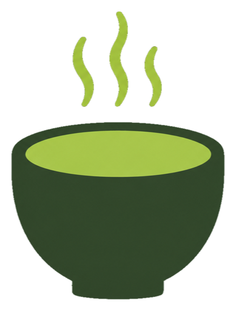
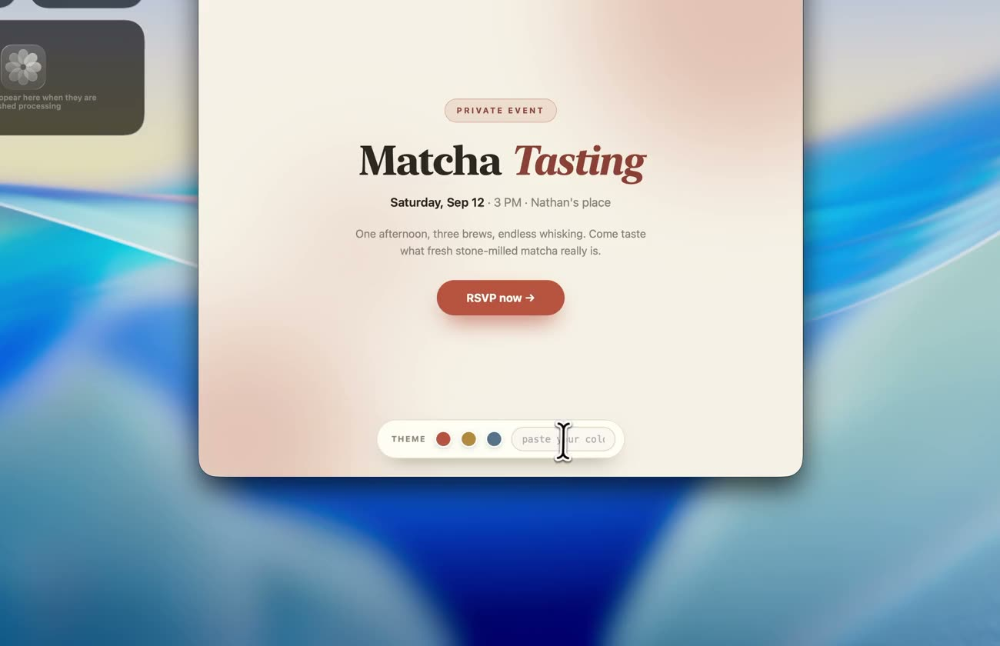

Stay in your rhythm.
Navigate, preview, paste. Your hands never have to leave the keyboard. Vim lovers, you’re home too.
←↓↑→
Arrow keys to explore. Return to paste.
Every shortcut is yours to remap.

Everything you copy, a shortcut away. A beautiful, native
clipboard manager for Mac. Free, open source, and all yours.
macOS 14+ · No account. No subscription. Just Whisk.
TAKE IT FOR A SPIN
Meet your new muscle memory. Search, filter, and click a card to paste.
This is a playground — your actual clipboard stays untouched.
The real panel floats over everything you do — ⇧⌘V from any app.
A BETTER EVERYDAY FLOW
Find that link. Reuse that snippet. Fill that form.
Whisk takes care of the in-between,
so you can get on with the good stuff.
The link, the image, the thought you nearly lost. Everything you copy lives in one beautiful panel, ready when you need it.

Text, links, images, files, colors, code. All welcome.
Navigate, preview, paste. Your hands never have to leave the keyboard. Vim lovers, you’re home too.
Keep the formatting, or leave it behind. Paste into any document without bringing the styling along.
Your go-to links and snippets, always close. Pin the essentials and let the rest expire on your terms.
YOUR NEXT FAVORITE UTILITY
Up and running in a minute. In your flow for good.
MADE WITH CARE. SHARED WITH EVERYONE.
A small, independent app with a simple belief: your everyday tools should belong to you. Built in Swift, shared under GPL-3.0, and made better together.